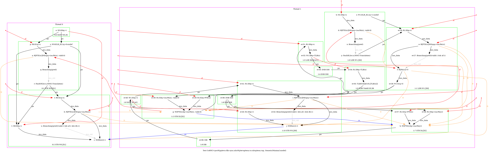
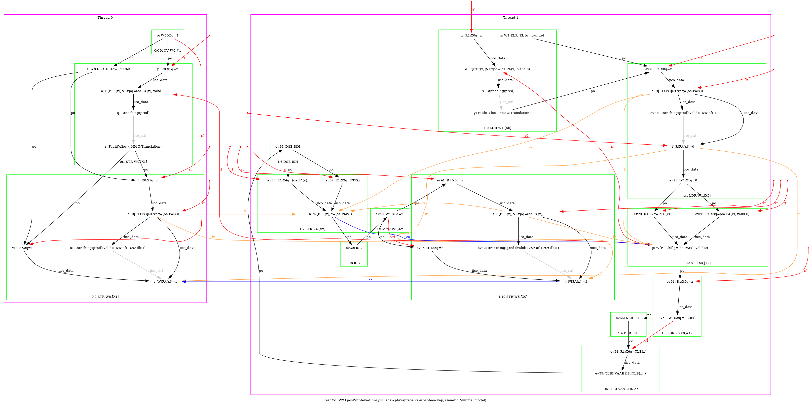
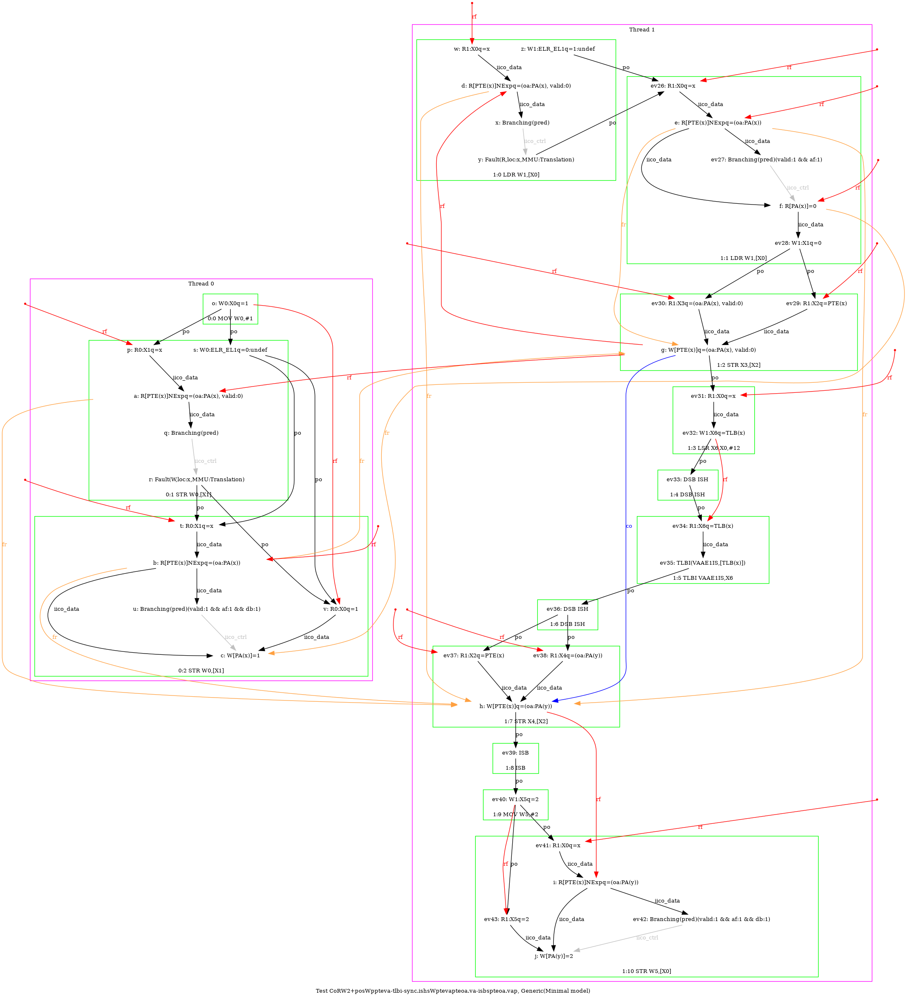
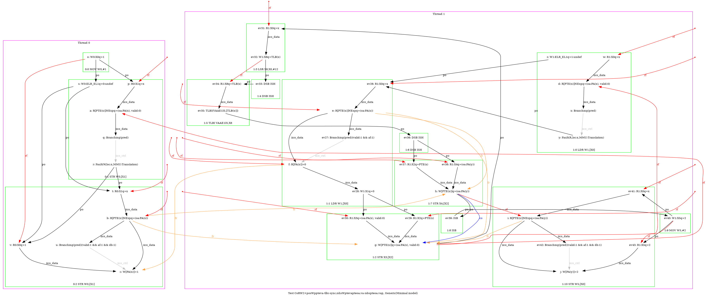

   …
AArch64 CoRW2+posWppteva-tlbi-sync.ishsWptevapteoa.va-isbspteoa.vap
"Rfe PosRWPPteVA TLBI-sync.ISHsWWPteVAPteOA.VA ISBsWWPteOA.VAP Coe"
Variant=imprecise
Cycle=Rfe PosRWPPteVA TLBI-sync.ISHsWWPteVAPteOA.VA ISBsWWPteOA.VAP Coe
Relax=[PteVA,TLBI-sync.ISHsWW,PteOA,PteVA,ISBsWW]
Safe=Rfe Coe PosRW
Generator=diy7 (version 7.56+02~dev)
Com=Rf Co
Orig=Rfe PosRWPPteVA TLBI-sync.ISHsWWPteVAPteOA.VA ISBsWWPteOA.VAP Coe
{ int x=0; int y=4;
0:X1=x;
1:X0=x; 1:X2=PTE(x); 1:X3=(oa:PA(x), valid:0); 1:X4=(oa:PA(y));
}
P0 | P1 ;
MOV W0,#1 | LDR W1,[X0] ;
STR W0,[X1] | STR X3,[X2] ;
| LSR X6,X0,#12 ;
| DSB ISH ;
| TLBI VAAE1IS,X6 ;
| DSB ISH ;
| STR X4,[X2] ;
| ISB ;
| MOV W5,#2 ;
| STR W5,[X0] ;
exists (1:X1=0 /\ [x]=1 /\ fault(P0,x,MMU:Translation) /\ ~fault(P1,x)) \/ (1:X1=0 /\ [x]=1 /\ fault(P0,x,MMU:Translation) /\ fault(P1,x,MMU:Translation)) \/ (1:X1=1 /\ [x]=1 /\ fault(P0,x,MMU:Translation) /\ ~fault(P1,x)) \/ (1:X1=1 /\ [x]=1 /\ fault(P0,x,MMU:Translation) /\ fault(P1,x,MMU:Translation))